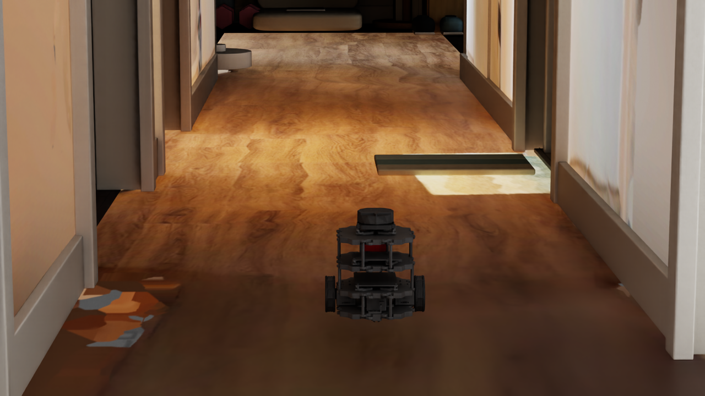
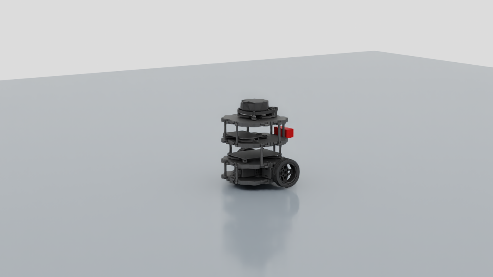

自由底盘，稳定落地
机器人底座未固定，使用导入的碰撞体和关节结构，先确认它能在测试地板上稳定停留。测试场景没有额外开启 ROS2、Isaac Lab 或导航策略。
DEVLOG · 2026.09.24 · OMNIVERSE / ISAAC SIM
昨天把现实空间整理成 Blender 资产，今天让机器人在 Isaac Sim 中真正落地、前进，并被墙壁挡住。环境和机器人两条迁移路线，终于在同一个物理场景里相遇。

独立的走廊机器人测试场景：引用现有 room USD 和 robot USD，保留原始资产。图中机器人位于测试起点。
01 / TWO PIPELINES
环境沿用照片 / LiDAR → Blender → USD → Isaac Sim 的路线。机器人则使用之前为 Blender 整理过、补齐 visual meshes 的 TurtleBot3 / NavBot URDF 资产，通过 Isaac Sim URDF Importer 生成 robot USD。
Blender 中看见机器人外观，并不等于获得可仿真的机器人。URDF 中的 link、joint、mass、inertia、collision 与 joint limits，才是动力学迁移的依据。后续改进 visual asset 时，仍需要保持这些物理结构。
02 / ROBOT IMPORT & DRIVE

检查到 4 个 visual mesh 实例、6 个 rigid bodies、6 个 colliders，以及两个轮子的 revolute joints 和三个 fixed joints。传感器外壳已显示，但还没有接入运行中的 LiDAR / Camera 数据。
机器人底座未固定，使用导入的碰撞体和关节结构，先确认它能在测试地板上稳定停留。测试场景没有额外开启 ROS2、Isaac Lab 或导航策略。
左右轮目标速度均为 3 rad/s，平地测试位移约 0.267 m，航向变化约 0.33°。轮速归零后，观察机器人停稳。
左轮 −2 rad/s，右轮 +2 rad/s，机器人原地左转约 104.45°，位置漂移约 1.5 mm。这是基础差速驱动检查，不是路径跟踪测试。
03 / CORRIDOR PHYSICS
新建 navbot_corridor_test.usda，关闭平地测试用的 Ground，直接使用走廊自带的 Floor 和 Walls collider。出生点设在走廊内，朝向 +Y，先落地、直行，再单独转向侧墙检查阻挡。
1280 × 720 / 30 FPS。两次独立仿真录制拼接：第一段沿走廊前进后轮速归零；第二段重置起点、朝侧墙行驶，被墙体挡住。转向是两次测试之间的重置，不是连续避障动作。
向下的物理 raycast 命中 Floor，地表 Z = 0。机器人落地后 base_link 高度约 0.010 m，测试过程中没有出现掉穿地板。
测量脚本记录约 4.07 秒仿真时间，位移约 0.376 m，横向漂移不到 1 mm。视频为随后独立重录的展示片段；这里的数值来自验证报告。
侧向查询命中 Walls，墙面 X 约 0.248 m。机器人朝 +X 行驶后，base_link 停在 X 约 0.169 m；继续驱动数秒，位置变化很小，没有观察到穿墙。
这里是墙体通过接触挡住机器人，并没有运行自动避障或导航控制器。只验证了一个出生点、一小段走廊和一侧墙壁；没有验证整栋环境的碰撞覆盖。早先方块在另一个位置穿透的原因仍待排查。
04 / THE DETOUR
导入后出现过两次用户点击 Play / Run 的崩溃，日志记录 usd_usd.dll 内存访问错误。它说明底层 USD 处理出现异常，但仅凭这个模块名不能确定根因。另一次排查时，脚本在场景加载完成前触发播放，产生了不同的 debug_draw 崩溃；这是测试时序失误，不能混作同一问题的证据。
异步渲染让画面绘制与仿真在不同线程中工作。Isaac Sim Full 默认会根据停止、暂停和播放状态自动切换相关设置。
关闭自动异步切换，并将 asyncRendering 与 asyncRenderingLowLatency 设为 false。仅设置其中一项，会被自动切换逻辑重新覆盖。
调整后连续 5 次独立 Play / Stop 测试通过，随后平地运动和走廊测试也完成，未观察到新的崩溃。
同步渲染可能绕开了触发条件，但尚未证明它就是根因，也不能宣称问题永久修复。机器人质量、碰撞和轮子参数没有为此更改。
05 / RECORDING & TIMING
第一次走廊脚本用视口更新次数估算秒数，触发了距离阈值失败；随后发现新顶层场景还缺少明确的时间轴范围。补上时间范围与 60 time codes/s 后，改用实际仿真时间计时，重新测量通过。初次结果保留，没有通过降低阈值来宣布成功。
方块实验使用 Windows 屏幕录制；本篇使用 omni.kit.capture.viewport 和 omni.videoencoding 录制指定 Camera，随后用 FFmpeg 拼接、加标签并压缩。视频中的运动来自物理仿真，不是关键帧动画。Movie Capture 负责采集，前进和停车时序由测试脚本控制。
场景、验证脚本、测量报告与原始视频均保存在项目中。最终场景恢复出生位置、轮速归零，便于下一次打开继续实验。
06 / REPRODUCE WITH PYTHON
以下公开版去掉本机绝对路径，并添加 Script Editor 的 async 运行入口。发布前三份脚本均在 Isaac Sim 6.1 实跑完成：运动与碰撞断言通过，录制脚本重新生成了两段 MP4。需要本文的 NavBot USD 场景与 Prim 层级；下载包仅包含脚本，不包含机器人和房间资产。它们不是适用于任意机器人的一键工具。
在平地 navbot_drive_test.usda 运行。设置左右轮目标速度，通过 tensor API 读取 base_link 位姿，测量位移和航向变化。结束时轮速归零并 Stop。
下载 control_navbot.py ↓在 navbot_corridor_test.usda 运行。向下 raycast 确认 Floor；读取机器人高度、直行位移和靠墙后的位置变化。它检查局部阻挡，不测量接触力。
下载 test_corridor_collision.py ↓在走廊场景运行。通过 omni.kit.capture.viewport + omni.videoencoding，按 30 FPS 生成 8 秒直行和 12 秒侧墙测试 MP4。文件名带时间戳，输出到项目 tests/physics/videos。
下载 record_corridor.py ↓先保存自己的修改并 Stop，打开对应场景。通过 Window → Script Editor 打开编辑器，载入或粘贴一份完整脚本，点击 Run。脚本已包含 asyncio 入口，不需要再包一层；运行结束前不要重复点击，也不要同时运行其他测试。它需要 Isaac Sim 的 Python 环境，不能直接用系统 Python 执行。
沿用同步渲染启动设置，确认时间轴覆盖至少 20 秒。输出路径从 isaacsim/scenes 中的当前场景推导；脚本会更新测试报告，但不会自动保存 USD。另一套机器人或场景需要调整 Prim 路径、出生点与阈值。
07 / TRY IT IN THE UI
通过 Window → Animation → Timeline 打开完整时间轴；若菜单缺失，在 Extensions 搜索 omni.kit.window.timeline。先在平地场景学习轮子控制，再进入走廊。Stop 用于结束并复位，Pause 用于暂时停住观察。
在 Stage 展开 /World/NavBot/Physics，分别选择 wheel_left_joint 和 wheel_right_joint，在 Property 中找到 angular Drive 的 Target Velocity。这个 USD angular drive 字段使用 deg/s：左右均填约 172，对应各 3 rad/s 前进；左 −115、右 +115，对应原地左转；左右归零用于停车。保留已有 damping 和 force 设置，测试前先确认场景空间足够。
在视口可见性 / Show 菜单启用 Physics 的碰撞体可视化（Colliders / Collision Meshes）。展开 Corridor → Collision，选 Floor 或 Walls，检查 Collider 的 Collision Enabled。只关闭 Visual 眼睛不会自动显示隐藏的 collision geometry。
走廊中先让机器人落地，再以低速短距离前进。独立靠墙测试需先 Stop，将 NavBot 的 Z 旋转从 90° 调到 0°，朝 +X 侧墙行驶；观察是否被墙挡住。结束时左右轮归零、Stop，并把朝向恢复到 90°。这里没有自动避障。
打开 Window → Rendering → Movie Capture；若没有入口，在 Extensions 启用 omni.kit.window.movie_capture。Camera 选 /World/Camera，Range 选 Seconds，Start / End 设为 0 / 8，FPS 设 30，分辨率 1280 × 720，Render Preset 用 RTX Real-Time 2.0 或 Use Current，输出选 MP4，指定文件夹和新文件名，点击 Capture Sequence。
Movie Capture 只负责录制，不会自动复演本文动作。轮速为零时机器人保持静止；要精确复现“前进后停车”，使用上面的录制脚本。Windows 录屏更适合展示菜单、鼠标和操作过程。
下一阶段补查碰撞覆盖，再接入 LiDAR / Camera，逐步验证手动控制、传感器数据和导航。现有 Rule-only + PPO correction policy 的复用，以及 Gazebo vs Isaac Sim 对比，仍属于后续工作。
返回开发日志